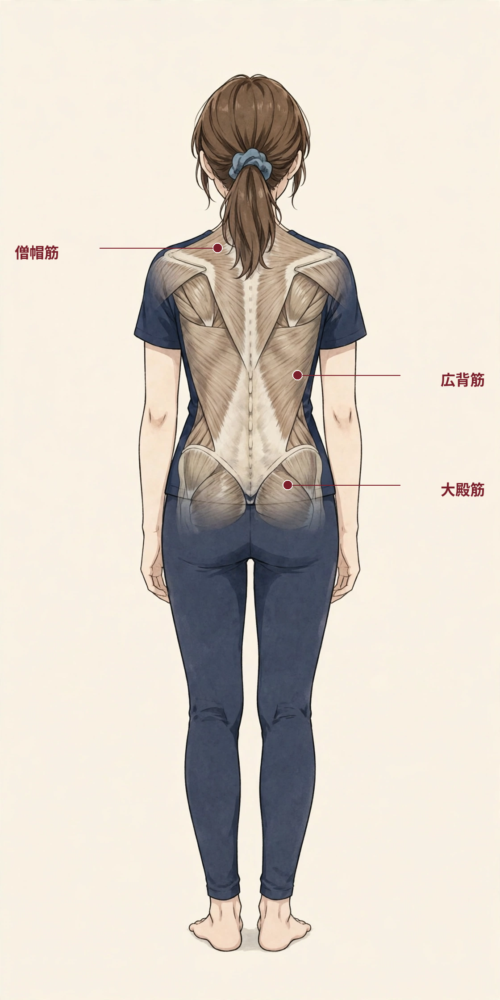

姿勢を支える筋肉のバランスが崩れると、体に何が起こるかを解説します
筋肉には「張りやすい筋肉」と「ゆるみやすい（働きが弱くなりやすい）筋肉」があります。このバランスの崩れが、姿勢の崩れとこりの連鎖を作ります。
肩こりや背中の張りは、その部位だけの問題として語られがちです。しかし実際には、張っている筋肉の反対側で、働きが弱くなった筋肉がいることがほとんどです。このページでは、筋肉の張りとゆるみの関係を、背面の大きな筋肉を例に解説します。
体を支える筋肉は、大きく2つの傾向に分けられます。一つは、負担がかかると縮んで硬くなりやすい筋肉（首・肩まわり、胸の前、太ももの前、腰まわりなど）。もう一つは、使われないと働きが弱くなりやすい筋肉（肩甲骨の内側、お尻、腹筋の深い部分、太ももの裏など）です。
問題は、この2つが組み合わさって起こることです。たとえば巻き肩では、胸の前の筋肉が縮んで張る一方、肩甲骨を寄せる筋肉は引き伸ばされて弱くなります。張っている側だけをほぐしても、弱い側が支えられないため、姿勢は元の位置に戻ってしまいます。
姿勢を後ろから支える代表的な筋肉が、僧帽筋・広背筋・大殿筋です（図1）。

図1：背面の大きな筋肉。僧帽筋は首・肩から背中の中央へ、広背筋は背中の側面から腰へ、大殿筋はお尻全体に広がります。
首の付け根から肩、背中の中央まで広がる大きな筋肉です。肩甲骨を寄せたり、頭を支えたりする働きがあり、デスクワークで張りやすい代表格です。上部が張ると肩こりとして感じやすく、下部は働きが弱くなりやすい部位です。
背中の側面から腰にかけて広がる、体で最も面積の大きな筋肉の一つです。腕を引く動作や、姿勢を後ろから支える働きをします。張りが強くなると、背中の張り感や、腕の動かしにくさにつながります。
お尻の大部分を占める筋肉で、立つ・歩く・階段を上るといった動作の要です。座る時間が長い生活では働く機会が減り、弱くなりやすい筋肉です。大殿筋が弱くなると骨盤を支える力が足りず、太ももの裏や腰に負担が移ります。
筋肉のバランスの崩れは、1か所で止まりません。お尻が弱くなれば腰が代わりに働いて張り、胸の前が縮めば肩甲骨まわりが引き伸ばされて張る、というように、負担は隣の部位へ移っていきます。「ほぐしてもすぐ戻る」と感じる背景には、この連鎖があります。
当サロンの施術では、張っている部位をほぐすだけでなく、弱くなっている部位が働きやすい状態を作ることを意識しています。施術後に簡単なセルフケアをお伝えするのは、弱い側の筋肉に「働くきっかけ」を日常の中で作るためです。
| 傾向 | 代表的な筋肉 | 起こりやすいこと |
|---|---|---|
| 張りやすい（縮みやすい） | 胸の前（大胸筋）、首・肩の上部（僧帽筋上部）、太ももの前、腰まわり | 巻き肩、首こり、反り腰の固定 |
| 弱くなりやすい | 肩甲骨の内側（僧帽筋下部・菱形筋）、お尻（大殿筋）、腹筋の深い部分、太ももの裏 | 肩甲骨が開く、骨盤を支えられない、姿勢が保てない |
この傾向は、体の使い方の偏りから生まれます。縮んだ状態で使われ続ける筋肉は張り、使われる機会の少ない筋肉は弱くなる。当たり前のことですが、この単純な積み重ねが、姿勢の崩れの正体です。
背面だけでなく、前面の筋肉もバランスに関わります。胸の前（大胸筋）が縮むと肩が前に引かれて巻き肩になり、背面の僧帽筋は引き伸ばされた状態で張ります。このとき背中側の「張り」は、弱さと表裏一体です。引き伸ばされながら働かされる筋肉は、疲労しやすく、張りとして感じられます。
また、太ももの前が張って縮むと骨盤は前傾し、お尻は働きにくくなります。前面と背面は別々に存在するのではなく、骨盤と背骨を挟んだ綱引きの両端です。施術では、前面の縮みをゆるめることと、背面の働きを取り戻すことをセットで考えます。
張っている場所を順にほぐすだけでは、連鎖は断ち切れません。当サロンでは、まず土台（骨盤まわり）のバランスを見て、縮んでいる側をゆるめ、弱い側が働くための刺激を入れ、最後に全体の張りを整える、という順番を意識しています。順番があることで、少ない負担で体が応えやすくなります。
同じ筋肉に負担が集中し続けると、筋肉は疲労し、回復が追いつかなくなります。デスクワークで首・肩が張るのは、頭の重さを同じ筋肉が支え続けるためです。動かしている自覚がなくても、姿勢を保つこと自体が筋肉の仕事です。
筋肉は、関節や体を守るために自ら硬くなることがあります。急な動きや冷え、痛みへの警戒がきっかけです。このタイプの張りは、無理に伸ばしたり強く押したりすると、体がさらに守ろうとして張りが戻りやすくなります。ゆるめるには、体が「大丈夫」と感じる刺激の入れ方が大切です。
反対側の筋肉が縮むことで、引き伸ばされた状態で働かされる筋肉も張ります。巻き肩で背中が張るのはこのタイプです。この場合、張っている背中だけをほぐしても、原因である胸の前の縮みが残るため、戻りが早くなります。
セルフケアの基本は、張りのタイプに合わせることです。使いすぎには休息と温めること、縮んでいる筋肉にはやさしいストレッチ、弱くなっている筋肉には小さな動きで「使う」刺激が向いています。全部を完璧にやる必要はありません。今の自分の張りがどのタイプかを知ることが、ケア選びの出発点です。当サロンでは施術の際に、その方に合うケアを具体的にお伝えしています。
「張り」と「こり」は似た言葉ですが、指す状態は少し違います。張りは、筋肉が緊張して硬くなっている状態全般を指します。こりは、その中でも、押すと痛みや不快感を感じる硬い部分（硬結）ができている状態を指すことが多いです。張りが続いた場所に、こりが育っていくと考えると分かりやすいでしょう。
こりができると、その部分の血行が落ち、疲労物質が流れにくくなり、さらに張りが強くなるという循環が起こります。ほぐすケアの目的は、この循環を断ち切ることです。硬結をピンポイントで攻めるより、周囲の緊張からほどいて血行を戻す方が、体への負担が少なく、戻りも穏やかです。
筋肉のバランスは、体の見た目にも直結します。胸の前が縮んで肩甲骨まわりが弱くなれば、バストの位置は下がって見え、背中は丸く見えます。お尻が弱くなれば、ヒップラインは下がり、太ももの前に負担が移って脚のラインが変わります。二の腕のたるみも、腕そのものより、肩甲骨の位置と姿勢の影響を受けていることが少なくありません。
見た目のお悩みを、パーツ単位ではなく「筋肉のバランス」として捉え直すと、ケアの優先順位が見えてきます。当サロンでは、気になる部位だけでなく、姿勢全体のバランスから施術を組み立てるのはそのためです。
筋肉量は、運動習慣がなければ年代とともに少しずつ減っていきます。特に弱くなりやすい筋肉（お尻、肩甲骨の内側、腹筋の深い部分）は、減り方も早い傾向があります。若い頃は気にならなかった姿勢の崩れが、40代以降に目立ってくる背景には、この変化があります。逆に言えば、弱くなりやすい筋肉を意識して使う習慣は、年代を問わず姿勢の支えになります。
現代の生活で最も筋肉バランスを崩しやすいのが、長時間のデスクワークです。座った姿勢では、胸の前と太ももの前が縮んだまま固定され、肩甲骨の内側とお尻は使われません。1日8時間、この配置が続けば、バランスは着実に偏っていきます。1時間に一度の立ち上がりと、肩甲骨を寄せる小さな動きが、偏りをリセットする最小の単位です。
Q. 筋肉の張りは、強くほぐせば取れますか？
A. 強い刺激が合うとは限りません。張りは防御反応として起こることもあり、強すぎる刺激はかえって筋肉を緊張させることがあります。当サロンでは体の反応を見ながら強さを調整しています。
Q. 弱くなった筋肉は、施術だけで戻りますか？
A. 施術は筋肉が働きやすい状態を作る手助けです。実際に働かせるには、日常の中でその筋肉を使う動作が必要です。施術後に続けやすいセルフケアをお伝えしています。
Q. 筋膜リリースとは何ですか？
A. 筋肉を包む膜（筋膜）の滑りを良くすることを目的とした働きかけの総称です。張りや動きの制限に関係するとされ、ほぐしやストレッチと組み合わせて行われます。
Q. 左右で張り方が違うのはなぜですか？
A. 利き手や日常の使い方の偏り（バッグを持つ側、脚の組み方など）で、左右の負担のかかり方が変わるためです。施術では左右差も確認しながら進めます。
解説と施術は、施術歴30年・鍼灸師の資格を持つ平賀建人が担当します。登録販売者・アロマセラピスト・パーソナルトレーナーの知識も活かし、体の仕組みをできるだけ分かりやすくお伝えすることを心がけています。
この記事は専門解説シリーズの1本です。料金やご予約についてはトップページをご覧ください。